Test evidence for beta readiness. Every screenshot below was captured from
production (relaystandby.com) during the walkthrough, not from a local build or a mock.
Buildmaster @ e875347
Suite 1547 passed / 1 skipped across 152 files · typecheck, lint and build clean
Method One purpose-built circle, walked end to end in sequence rather than
screen by screen: an owner with a name set, a verified partner who can sign in, an aunt marked
emergency-code-only, a verified doctor, and a verifier who never accepted. The release below was
genuinely started, genuinely confirmed, genuinely opened and genuinely reversed — each screenshot
is the state the previous action produced.
Data handling All fixtures deleted afterwards; production returned to its baseline
accounts with zero orphaned rows.
Coverage summary
Ref
Use case
Actor
Result
UC-01
Know whether the vault could actually open
Owner
Pass
UC-02
Build the circle, and see who does not count
Owner
Pass
UC-03
Decide who can reach what
Owner
Pass
UC-04
Set the conditions
Owner
Pass
UC-05
Choose someone to help set it up
Owner
Pass
UC-06
Record how consent was obtained
Owner
Pass
UC-07
Accept a place in someone's plan
Contact
Pass
UC-08
Stand by, and see the shape of the grant
Recipient
Pass
UC-09
Ask them to open it
Recipient
Pass
UC-10
Answer a request for access
Owner
Pass
UC-11
Start a release yourself
Owner
Pass
UC-12
Be told a decision is waiting
Verifier
Pass
UC-13
Answer “is this real?”
Verifier
Pass
UC-14
Hear what happened after answering
Verifier
Pass
UC-15
Open what was set aside
Recipient
Pass
UC-16
Stop it — check in and close everything
Owner
Pass
UC-17
Read what happened while you were away
Owner
Pass
UC-18
Get back in when the code never arrived
Verifier
Pass
UC-19
Get back in after losing a device
Contact
Pass
UC-20
Leave, export, or close the account
Owner
Pass
UC-21
Public surfaces and the legal pages
Visitor
Pass
UC-22
Create a vault
New owner
Pass
UC-23
Get back in after losing the authenticator
Owner
Pass
UC-24
Find out you have been made a helper
Helper
Pass
UC-25
Add things to somebody else's vault
Helper
Pass
UC-26
Suggest a person, and be unable to add them
Helper
Pass
UC-27
Answer a helper's suggestion
Owner
Pass
UC-28
Bring a password manager export in
Owner
Pass
UC-29
Be shown where to start
New owner
Pass
UC-30
Be stopped before firing a release by mistake
Owner
Pass
UC-31
Check it is really them — the verification call
Both
Pass
UC-32
Review what a helper has done on your behalf
Owner
Pass
UC-33
Know how many ways back in you have left
Owner
Pass
UC-34
Meet a page that is missing, or one that broke
Anyone
Pass
UC-35
Judge the product without an account
Visitor
Pass
Two access paths are covered throughout. A contact who has accepted a standby account
signs in as themselves and nothing secret is transmitted when a release opens — UC-15 was walked
that way and the URL carried no token. A contact who cannot sign in — a recipient who never
accepted, or a verified verifier holding no passkey and no authenticator — acts using a single-use
code, which is why UC-18 and UC-19 show code entry.
UC-01 — Know whether the vault could actually open
ActorOwner
GoalAnswer one question without reading anything: if something happened tomorrow, would this work?
ExpectedA standing statement on every screen. Green only when the plan can actually run; when not, the single fastest next action, not a list of everything imperfect.
VerifiedPass. Reads “could reach both of the things that matter” — counting only items that matter and only verifiers who can actually act. A non-fatal gap (“a second person who can confirm”) is stated without turning the headline red.
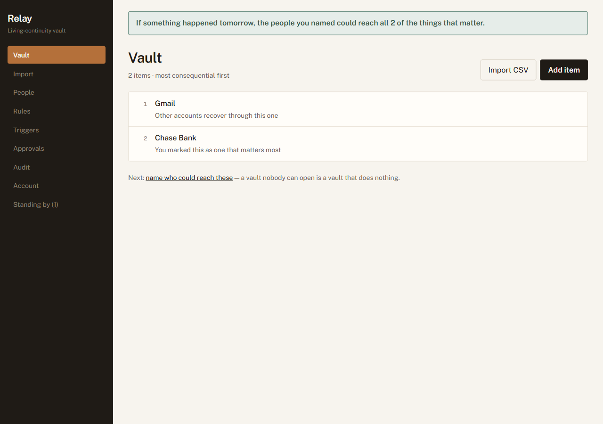
UC-01 — the vault, most consequential first, under the standing statement.
UC-02 — Build the circle, and see who does not count
ActorOwner
GoalName who would step in and who would confirm, and understand what is still missing.
ExpectedNaming is stated as the first half of two. Each person’s line says what is missing, not merely which state they are in. A contact the owner has marked emergency-code-only is never counted as somebody to chase.
VerifiedPass. Four person states on one screen: verified, emergency-code-only, never accepted, and a verified verifier with no fallback. The completeness box counts one outstanding person — the aunt marked code-only is correctly excluded — and no longer claims “nothing would open” while the banner above says the plan works.
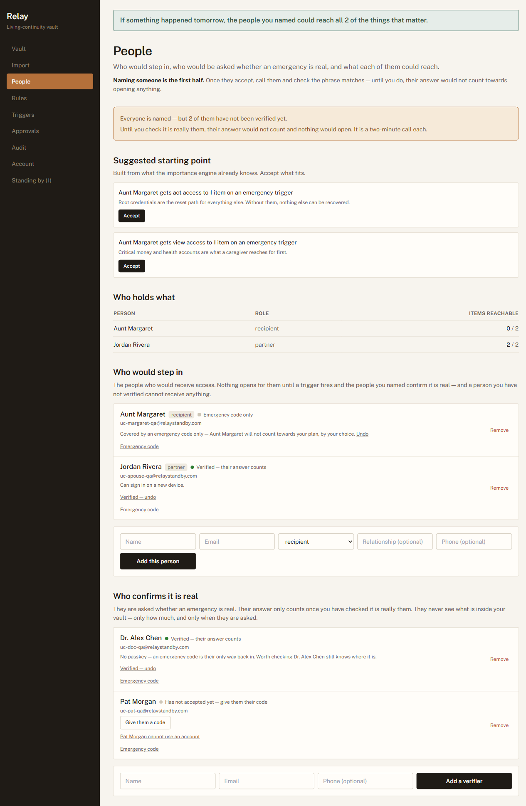
UC-02 — every person state the product can produce, in one circle.
UC-03 — Decide who can reach what
ActorOwner
GoalGive one person scoped access to specific items under a specific kind of emergency.
ExpectedRules read as sentences. Reversible is the default; estate is forced irreversible and the control says so.
VerifiedPass. A rule provisions its trigger, which is why an unused trigger never appears and can never fire.
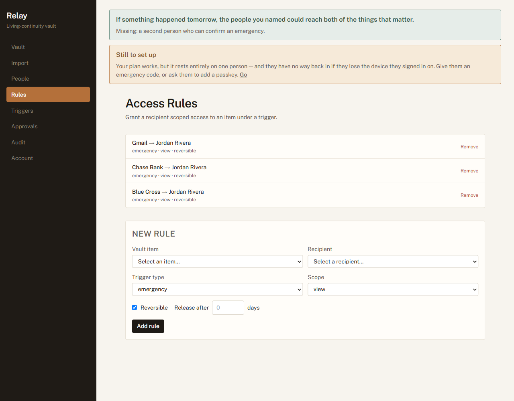
UC-03 — access rules.
UC-04 — Set the conditions
ActorOwner
GoalChoose how long Relay waits, and how many people must agree.
ExpectedArmed is the resting state. Plain language, no schema vocabulary, no demo controls shown to a non-demo owner.
VerifiedPass. “People who must agree first” rather than “Required confirmations (N)”; the demo simulate control is absent for a real account.
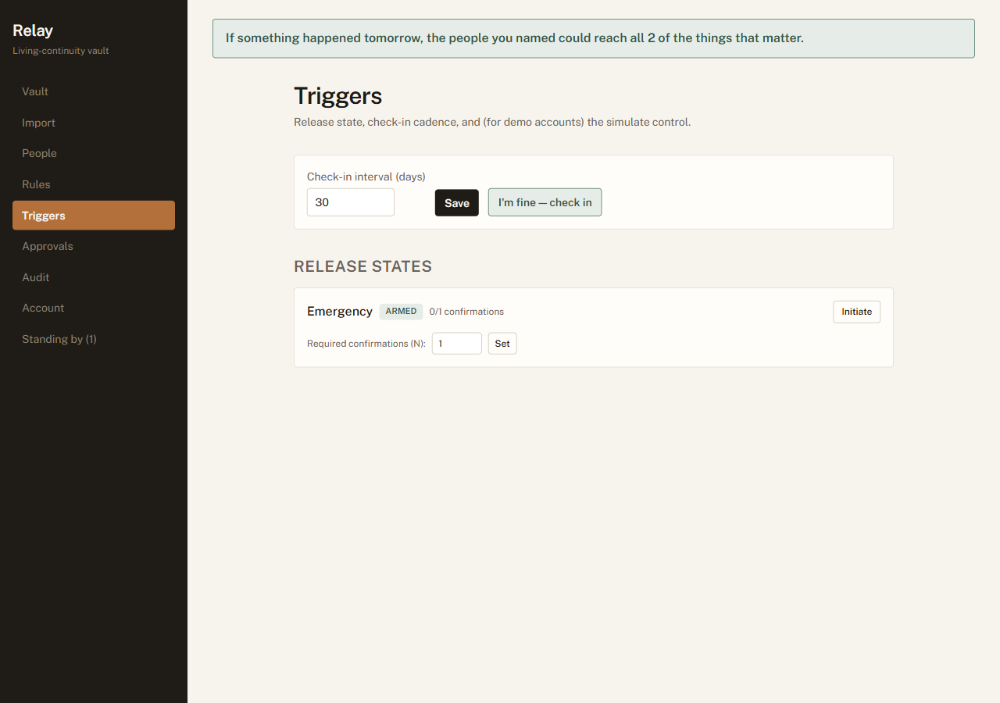
UC-04 — triggers, armed.
UC-05 — Choose someone to help set it up
ActorOwner
GoalLet an adult child do the typing without giving them anything they should not have.
ExpectedWhat a helper can and can never do is stated before the button. Candidates are limited to people already named who have accepted.
VerifiedPass. Both lists render; a helper cannot open anything, decide access, touch a release, or add themselves.
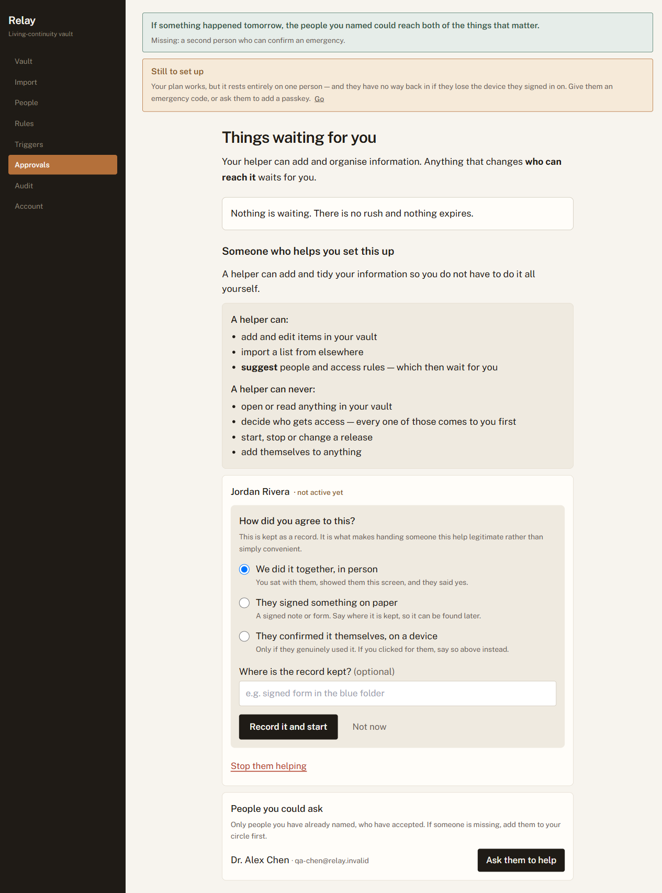
UC-05 / UC-06 — choosing a helper, and recording how consent was obtained.
UC-06 — Record how consent was obtained
ActorOwner
GoalMake the delegation legitimate rather than merely convenient.
ExpectedNothing activates until consent is recorded (J3-R2). In-person and paper are offered as peers of the link, because the person being delegated for is the least likely to own a smartphone (J3-R3).
VerifiedPass. Created pending → recorded in person with an evidence note → active. The link option is worded to discourage an owner recording a consent the other person never gave.
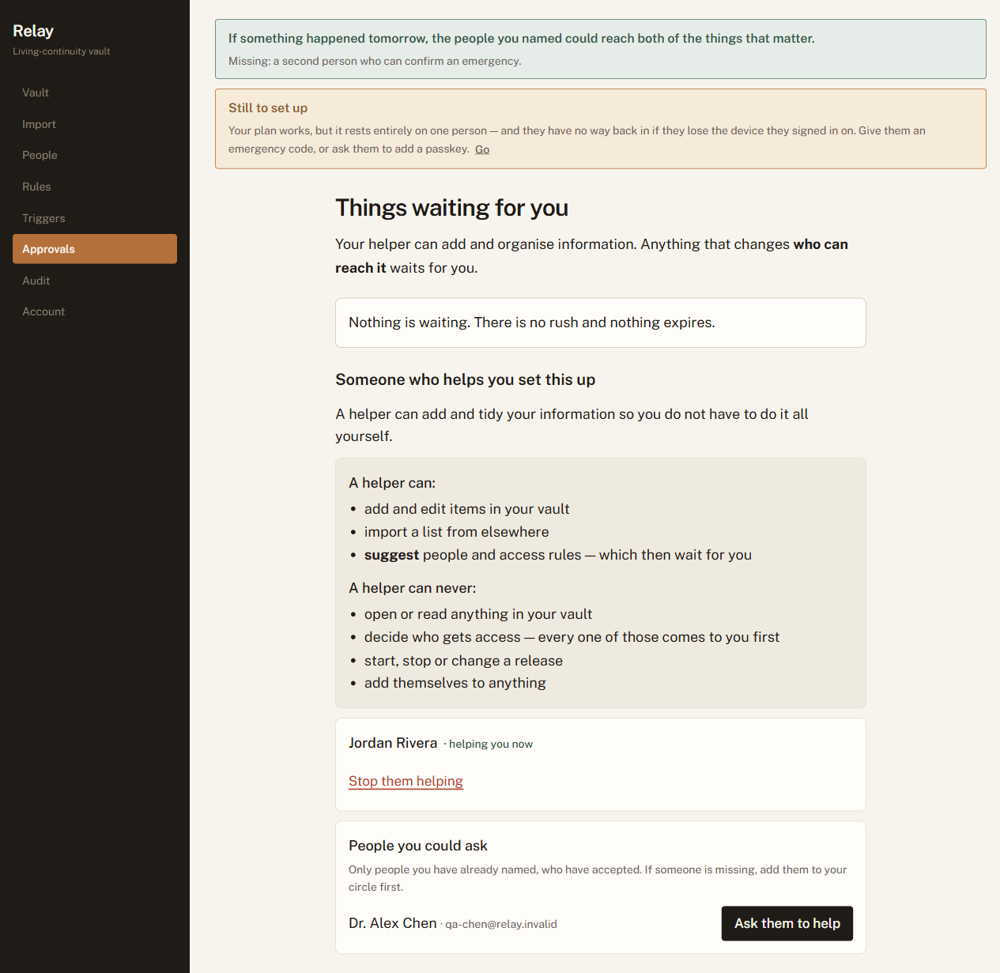
UC-06 — active only after the record exists.
UC-07 — Accept a place in someone's plan
ActorNamed contact
GoalBe recognisable later, without being handed anything now.
ExpectedA typed code, never a link that signs you in. Accepting opens nothing.
VerifiedPass. Copy no longer assumes the code arrived by email — delivery is owner-brokered by design.
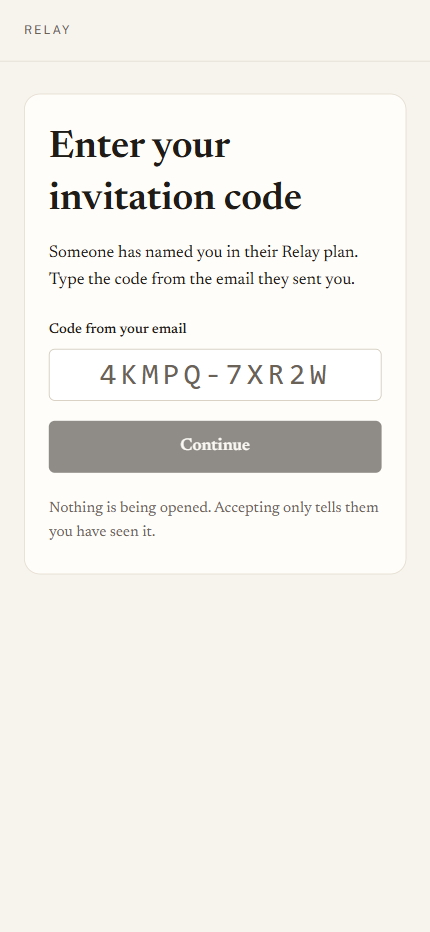
UC-07 — accepting.
UC-08 — Stand by, and see the shape of the grant
ActorRecipient (standby)
GoalKnow who you are standing by for and roughly what is set aside — never what it is.
ExpectedThe owner by name. Counts and categories only (J4-R10). Leaving always available.
VerifiedPass. “Margaret Chen”, not an email address; “Set aside for you: 3 items” with categories and no titles.
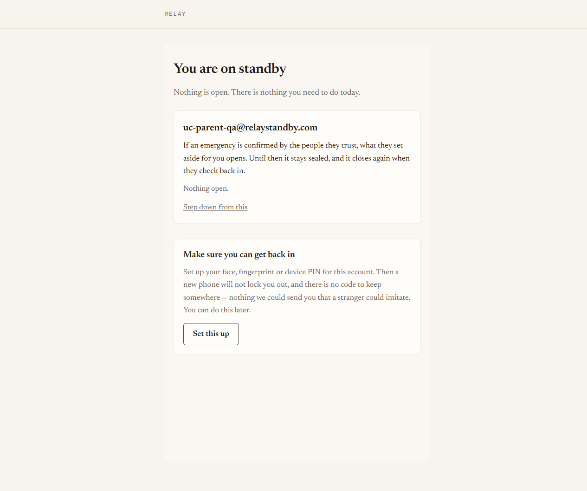
UC-08 — standing by. Most of the time this screen says nothing is needed.
UC-09 — Ask them to open it
ActorRecipient (standby)
GoalRaise a request when something has happened and no trigger has fired.
ExpectedThe owner is asked first. Everyone else named is told a request was made, whatever the outcome (J6-R9) — and that is stated before the form, not discovered after. Capped at three in twenty-four hours.
VerifiedPass. Request created against production and reached the owner. Free text is capped, flattened to one line, and any link is removed before it is emailed.
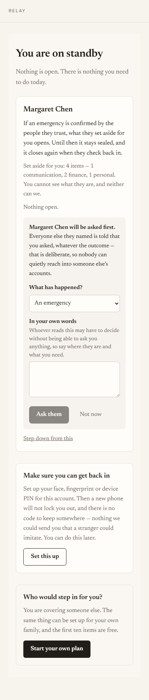
UC-09 — the deterrent is stated up front, not afterwards.
UC-10 — Answer a request for access
ActorOwner
GoalSay “I’m fine” or “let them in” before anyone else is involved.
ExpectedWho asked, in their own words, with a countdown, and a plain statement of what happens if the owner does not answer.
VerifiedPass. “Jordan Rivera is asking for access”, the reason quoted, “1h 58m left to answer”, and both answers offered.
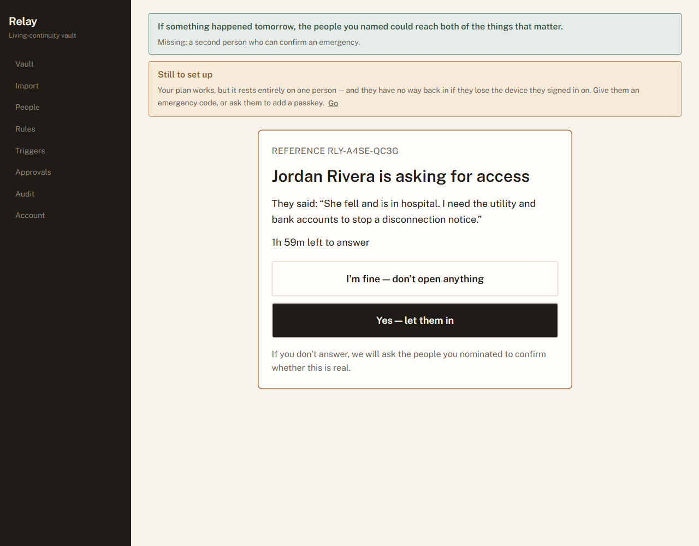
UC-10 — the challenge. Before this walkthrough nothing in the product could produce a request for this screen to show.
UC-11 — Start a release yourself
ActorOwner
GoalOpen the window deliberately — “I know I am about to be unreachable.”
ExpectedStill requires the named people to confirm. Both reversal controls appear, and they are deliberately not equal in weight.
VerifiedPass. Advanced to the confirmable window at 0 of 1 confirmations — nothing opened. Stand down — re-arm is prominent; Cancel permanently is separated and confirms first, so somebody stopping a false alarm at speed cannot retire their whole plan by mistake.
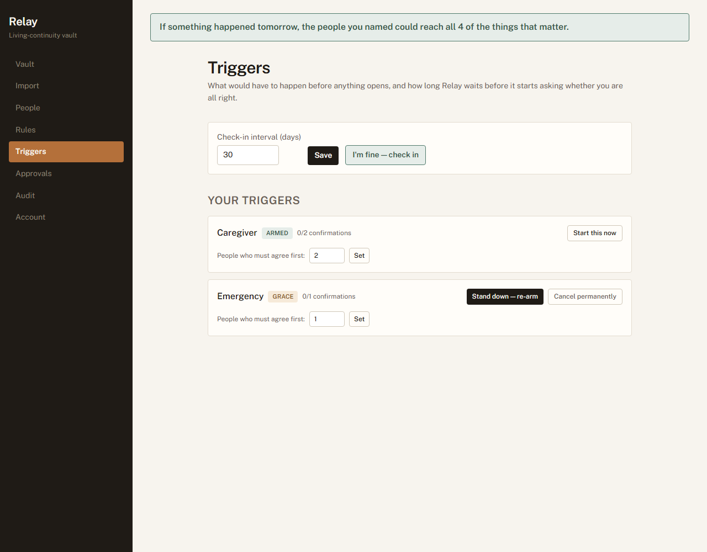
UC-11 / UC-16 — a release in flight, with both ways to stop it.
UC-12 — Be told a decision is waiting
ActorVerifier (standby)
GoalFind the question by visiting the site, with nothing to intercept.
ExpectedA verifier who can sign in receives no credential at all — the message tells them to sign in, and the dashboard carries the ask.
VerifiedPass. “They need your answer” with a direct action, and no code was minted for this person.
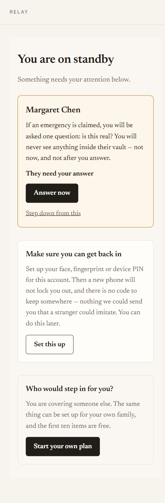
UC-12 — pull, not push.
UC-13 — Answer “is this real?”
ActorVerifier
GoalAttest that an emergency is genuine, without an account created at decision time and without seeing the vault.
ExpectedJ7-R3 in order: who is asking, why now, what has been tried, what confirming will and will not cause. Three answers at equal prominence (J7-R6). Scale shown; contents never.
VerifiedPass. “Is this real, for Margaret Chen?” — the vault is named, which it was not before 2026-08-12. “They started this themselves” is derived from how the release began. All three answers now share one visual treatment; until this pass “Yes” was a filled button and “No” an outline.
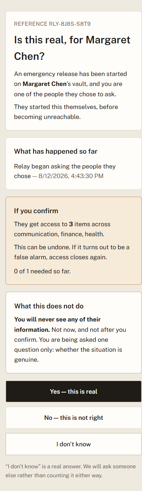
UC-13 — the decision page. The single highest-stakes screen in the product.
UC-14 — Hear what happened after answering
ActorVerifier
GoalNot be left wondering. A verifier who hears nothing back stops answering (J7-R12).
ExpectedImmediate closure naming whether it can be reversed, plus the case reference.
VerifiedPass. “Recorded. They can reverse this at any time.”
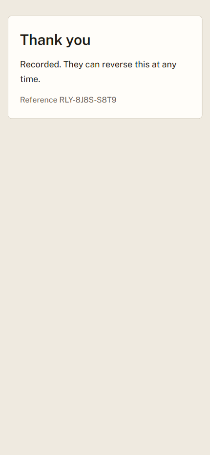
UC-14 — closure.
UC-15 — Open what was set aside
ActorRecipient
GoalReach the accounts that were assigned, in a usable order.
ExpectedOrdered by consequence. Decryption happens in the browser. A contact who accepted signs in as themselves — no token in the URL.
VerifiedPass. Opened from a session with a clean URL; three items in priority order, each revealed only on request.
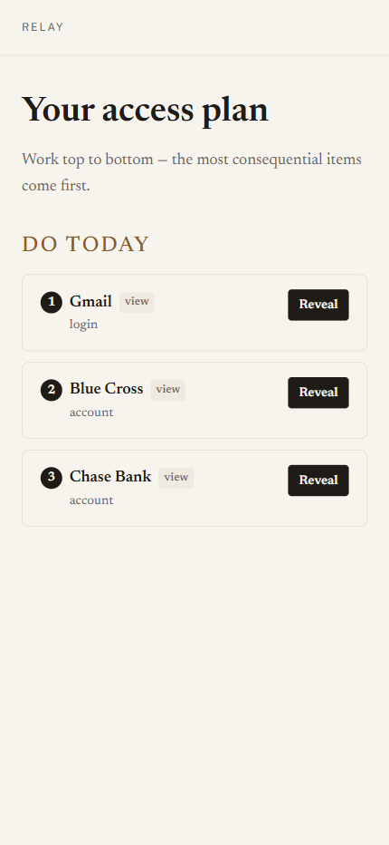
UC-15 — access, open. Nothing secret was emailed to reach this screen.
UC-16 — Stop it: check in and close everything
ActorOwner
GoalCome back and have it all shut, without undoing anything by hand.
ExpectedOne action reverses pending, grace and released alike, and names what it closed.
VerifiedPass. “Checked in — emergency re-armed.” The released trigger returned to armed and the recipient’s access closed.
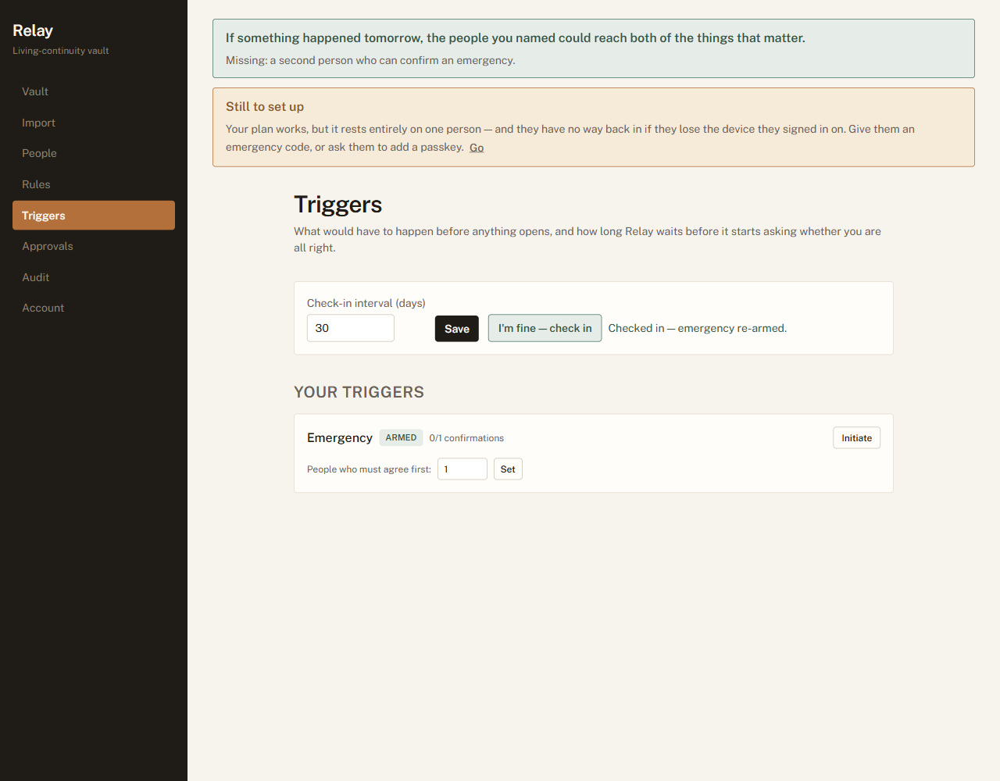
UC-16 — reversal, in one action.
UC-17 — Read what happened while you were away
ActorOwner
GoalFind out what actually happened, and be able to check that the answer is trustworthy.
ExpectedThe story in sentences, above a hash-chained record that cannot be edited. People named, not UUIDs. It must distinguish “somebody looked” from “nothing happened”.
VerifiedPass. “an emergency was raised and Dr. Alex Chen confirmed it was real”; the table names Dr. Alex Chen and Jordan Rivera with the raw ids beneath, and the chain still verifies — names are resolved for display only and never written into the record.
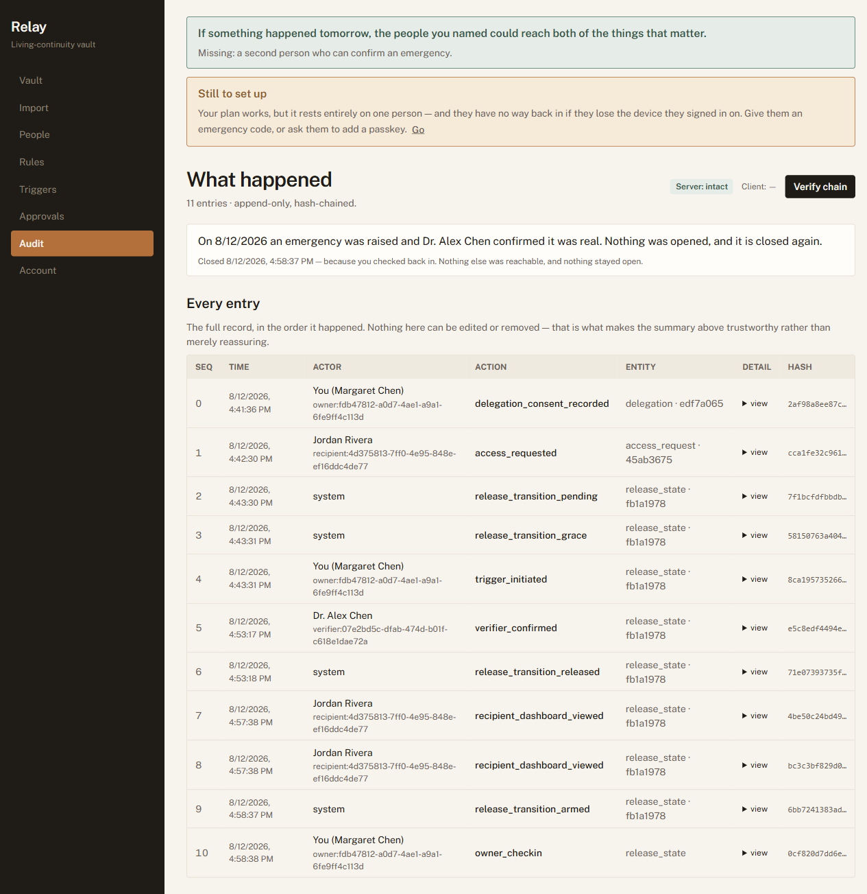
UC-17 — the record, after a complete incident.
UC-18 — Get back in when the code never arrived
ActorVerifier
GoalAnswer even though the message never arrived or the code expired.
ExpectedSelf-service, because the owner may be the person in hospital. Sends to the address on file, never to one typed in.
VerifiedPass. “My code has expired, or never arrived” opens the form. What is sent depends on how the person is set up, so the wording promises what they need rather than “a code”.
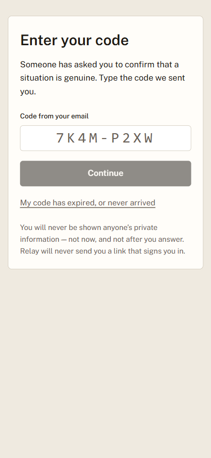
UC-18 — code entry, with recovery.
UC-19 — Get back in after losing a device
ActorAny contact
GoalAct when the usual sign-in is gone — or when there never was one.
ExpectedWorks once. The owner is told it was used and asked to check it was really them.
VerifiedPass. Copy now names the real alternative when the owner cannot be reached: the others they named can still answer.
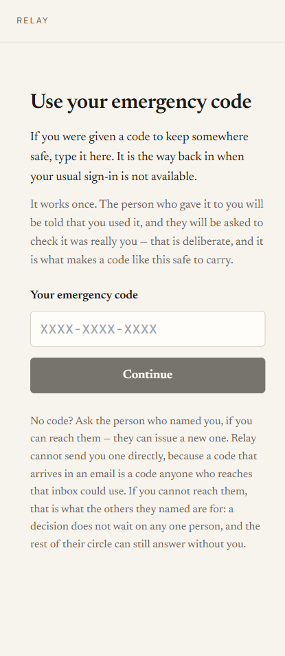
UC-19 — the way back in.
UC-20 — Leave, export, or close the account
ActorOwner
GoalTake the data out, stop paying, or leave entirely.
ExpectedExport decrypted in the browser; cancel without losing the vault; close with the consequences stated in the one colour reserved for what cannot be undone.
VerifiedPass. Name, passkey, recovery codes, subscription, export and closure all present. Leaving is a first-class path, not a support ticket.
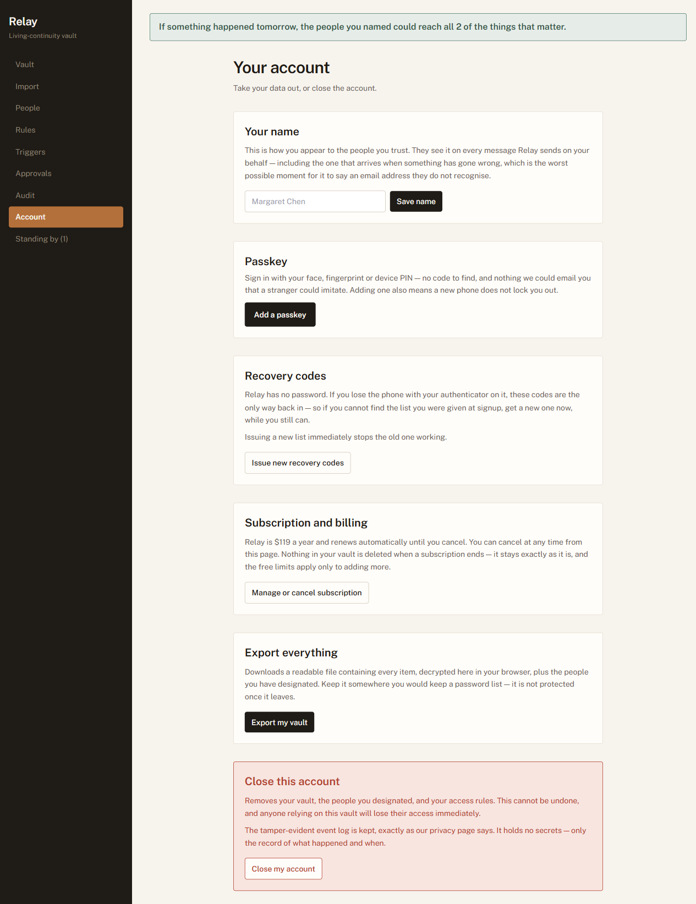
UC-20 — the account screen.
UC-21 — Public surfaces and the legal pages
ActorVisitor, and people who never signed up
GoalUnderstand the product, and — if somebody named you — find out what that means for you.
ExpectedTerms and Privacy each address the population that did not sign up and was merely named.
VerifiedPass. Both live, both carrying those sections. Counsel review under g2-counsel-opinion remains outstanding and this does not substitute for it.
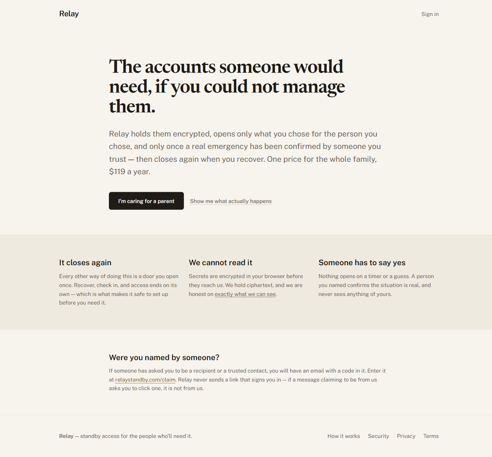
UC-21 — relaystandby.com
UC-22 — Create a vault
ActorNew owner
GoalStart, without inventing a password.
ExpectedTwo steps, an authenticator required, and recovery codes issued at the point they can still be saved.
VerifiedPass. The name field shows a live preview of the consequence of leaving it blank — “they will see your email address when we contact them” — which is the same defect that had to be fixed in the standby dashboard, pre-empted at the one moment it can be avoided.
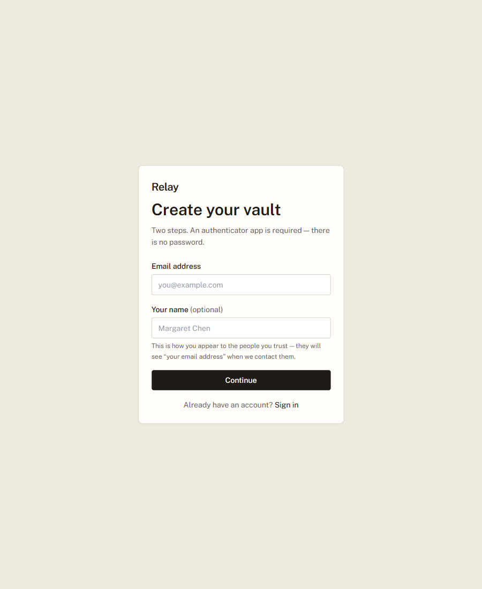
UC-22 — creating a vault.
UC-23 — Get back in after losing the authenticator
ActorOwner
GoalRecover a vault when the phone with the authenticator is gone.
ExpectedA recovery code replaces how you sign in and touches nothing inside the vault — and the page says so, because the fear at that moment is that the data is gone.
VerifiedPass. “Your vault contents are untouched — this only replaces how you sign in.”
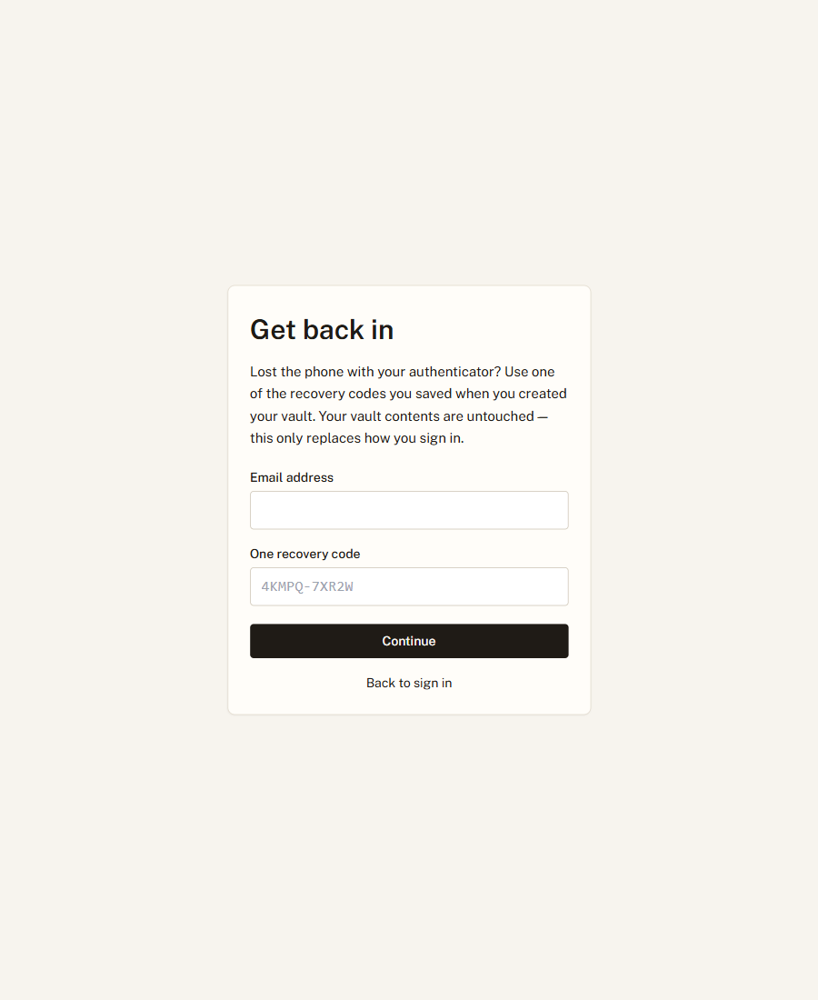
UC-23 — recovery.
UC-24 — Find out you have been made a helper
ActorHelper
GoalDiscover the job exists at all.
ExpectedTold on a screen they already visit, with the boundary summarised before they go any further.
VerifiedPass. “You are helping Margaret Chen set up” on the standby dashboard. Until this pass nothing told them — an owner could appoint somebody and the person on the other end had no screen, no message and no route they could have guessed.
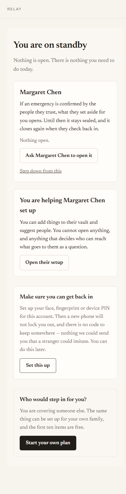
UC-24 — the only way a helper learns.
UC-25 — Add things to somebody else's vault
ActorHelper
GoalDo the typing an older parent will not do, without gaining anything they should not have.
ExpectedEncrypted in the helper’s browser exactly as an owner’s is. Sealed on save — a helper cannot read back even their own entry (J3-R4). The boundary is stated above the tools, not discovered by trying.
VerifiedPass. Item saved to another person’s vault with delegate provenance recorded and the audit entry attributed to delegate:<id>. Probed from the helper’s own session: their list returns only their entry — the owner’s private item is absent — carries no ciphertext, and a vault with no delegation returns 403.
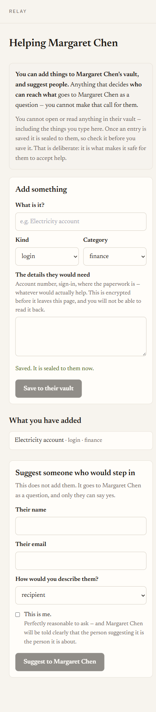
UC-25 — the workspace, after an entry was saved and sealed.
UC-26 — Suggest a person, and be unable to add them
ActorHelper
GoalSay “my brother should be on this” without being able to make it so.
ExpectedEverything that decides who can reach what stops and waits for the owner (J3-R6). A helper proposing themselves is offered plainly and labelled on the way past, because hiding it would only mean somebody typing their own name in the field above and nobody noticing.
VerifiedPass. Proposal queued against the helped vault, shown back as “waiting for Margaret Chen”, and nothing changed in the circle until she answered.
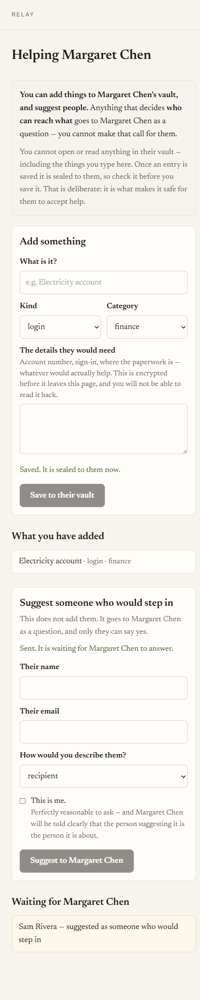
UC-26 — a suggestion, not a change.
UC-27 — Answer a helper's suggestion
ActorOwner
GoalDecide, in plain language, on something somebody proposed on your behalf.
ExpectedApproving runs through the same validated path an owner would use — an approved proposal is not a trusted insert.
VerifiedPass. The queue showed the suggestion, the owner approved, and Sam Rivera appeared in the circle as a real recipient. This screen had rendered an empty state since it shipped, waiting on a proposal nothing in the product could make.
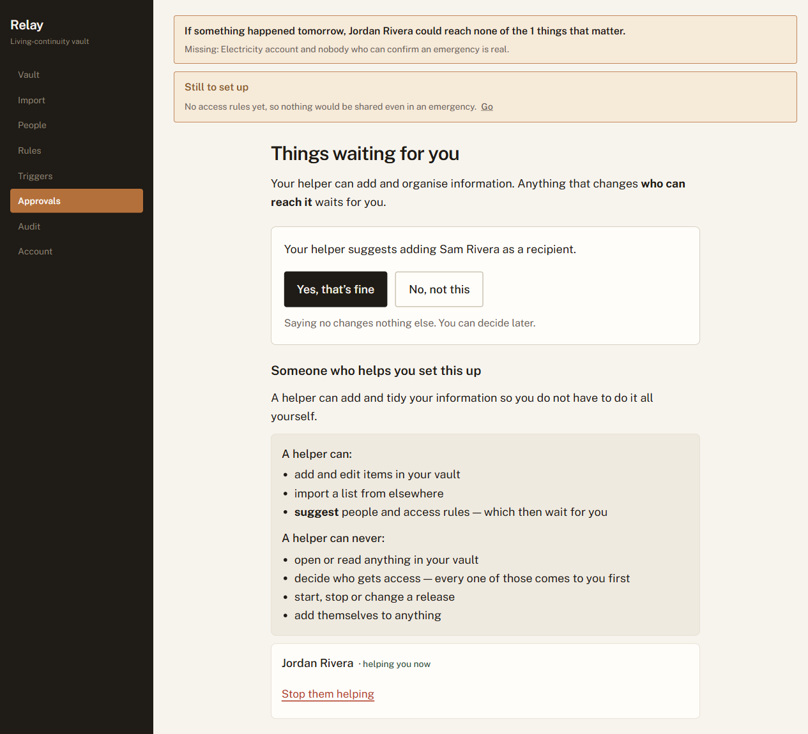
UC-27 — the queue, filled for the first time.
UC-28 — Bring a password manager export in
ActorOwner
GoalStart from what already exists rather than typing it all again.
ExpectedParsed and encrypted entirely in the browser. A preview before anything is written, and the importance engine re-run afterwards so nothing lands silently uncovered.
VerifiedPass. A three-row LastPass export previewed and imported on production; all three appeared in the vault. The preview shows service, URL and username and no passwords — the one screen where a shoulder-surfer would see the whole file at once.
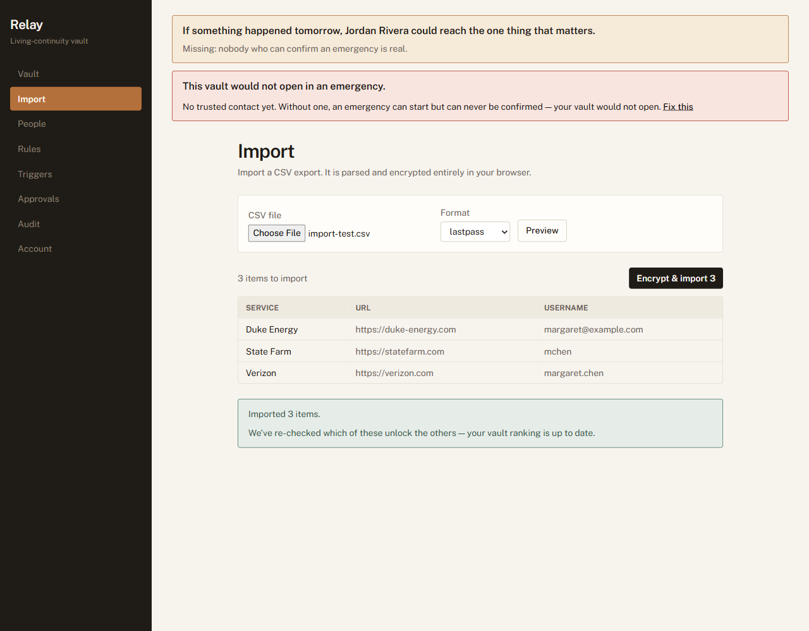
UC-28 — import, after the run.
UC-29 — Be shown where to start
ActorNew owner
GoalNot face an empty vault and a blank mind.
ExpectedThe question that produces a useful list — not “add an item”.
VerifiedPass. “If they were hospitalised tomorrow, these are the accounts you would need first.”
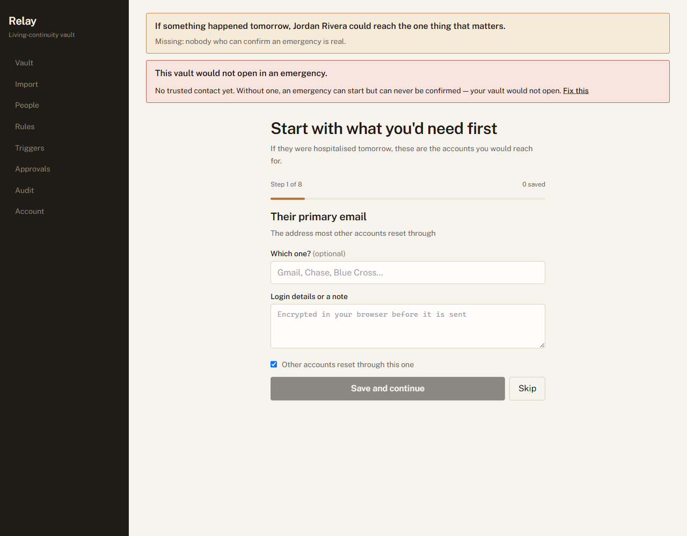
UC-29 — the first-run prompt.
UC-30 — Be stopped before firing a release by mistake
ActorOwner
GoalNot start an emergency with one stray click on a button labelled with a word that does not say what it does.
ExpectedThe consequence stated, not “are you sure”. Reversible and irreversible triggers get different sentences and different weights; the irreversible one asks the trigger type to be typed, matching what closing an account already demands.
VerifiedPass. “Everyone you named to confirm an emergency will be asked whether this is real… You can stop it at any point by checking in.” Backing out left the trigger ARMED and changed nothing. ⏸️ This is a precondition on g2-counsel-opinion, not an improvement — today every selectable trigger is reversible, and the day estate becomes selectable that click is permanent. Since the grace ruling of the same day the estate branch also states the three-day window that follows: with no way to reverse a completed handover, that window is the only chance anyone gets to stop it.
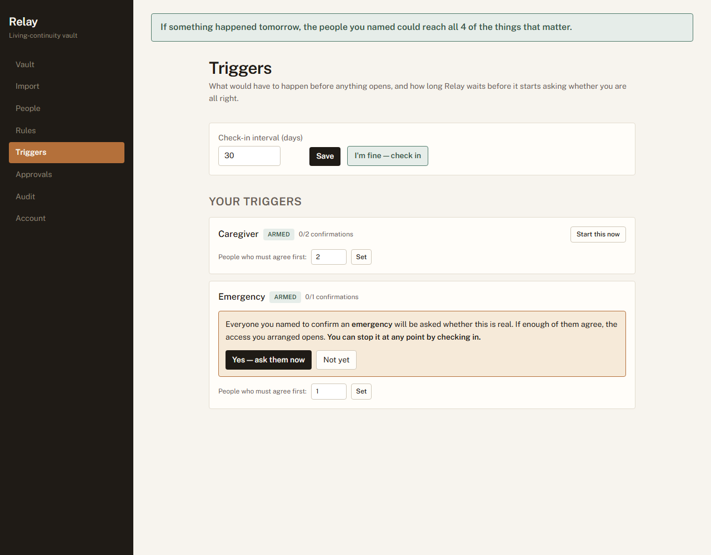
UC-30 — the confirmation.
UC-31 — Check it is really them
ActorOwner and contact, together, on the phone
GoalEstablish that the person who accepted the invitation is the person who was meant to.
ExpectedFour words derived from the binding, shown to both sides. The owner reads theirs aloud; the contact confirms theirs match. A mismatch means somebody else opened the invitation, and both screens say what to do about it.
VerifiedPass. Both screens read granite forest mitten granite. The owner pressed “The words matched”, the person flipped to verified, and readiness moved from “your plan cannot run yet” to executable.
This is the most consequential use case in the product, and until 2026-08-12 it could not be
performed at all. The owner’s screen has always said “They see the same four words
on their own screen” — and nothing showed them to the contact. The owner was being
asked to make a comparison the other side could not take part in, and a person asked
“do these match?” while holding nothing says yes. Everything downstream rests on it:
since §4.3, only a confirmed person’s answer counts towards opening anything.
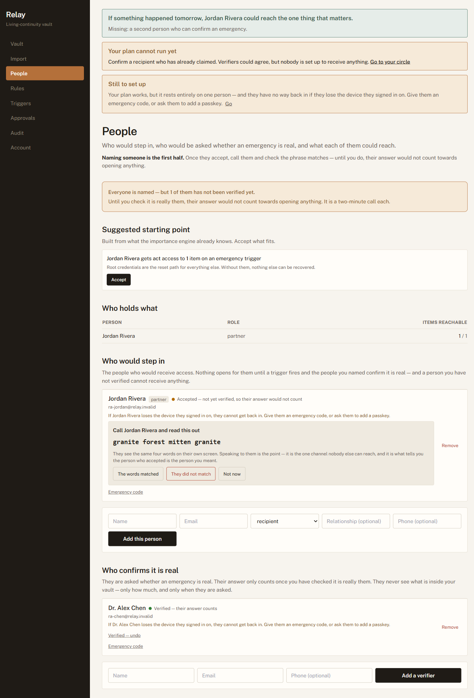
UC-31 — the owner’s side: call them and read this out.
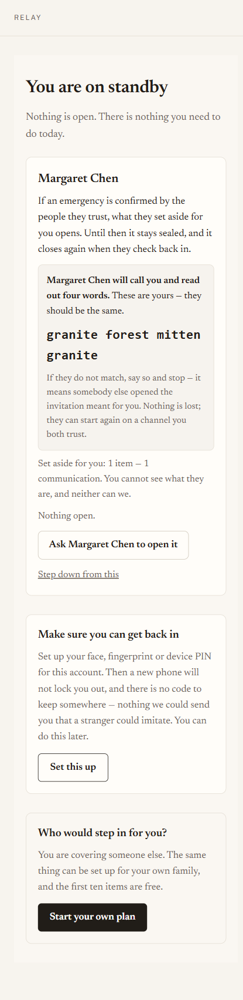
UC-31 — the contact’s side, which did not exist before, including what to do when the words do not match.
UC-32 — Review what a helper has done on your behalf
ActorOwner
GoalKnow what somebody with setup rights actually did, without reading a raw log.
ExpectedJ3-R8. Plain language, derived from the audit chain rather than a second log that could drift from it, and placed beside the control that removes them — the evidence belongs next to the decision it informs.
VerifiedPass. A helper added an item and suggested a person; the owner saw “Added something to your vault” and “Suggested somebody who would step in”. In the record itself the actor now reads “Jordan Rivera (helping you)” with the raw id beneath and the chain still intact — delegates were the one actor type without a name until this pass.
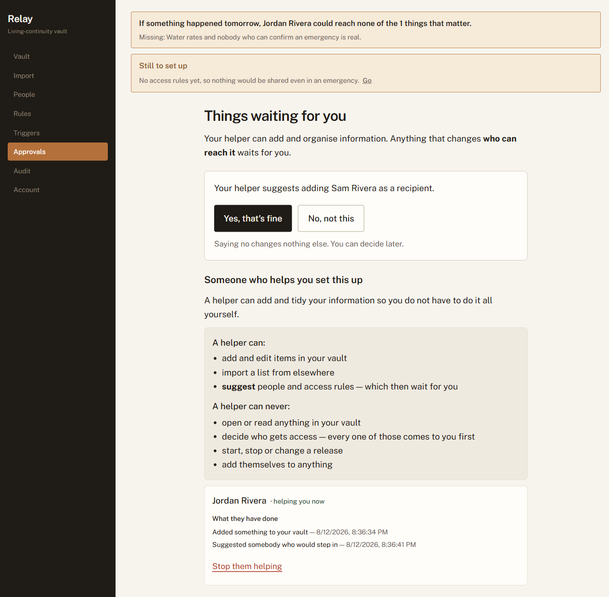
UC-32 — what they did, beside “Stop them helping”.
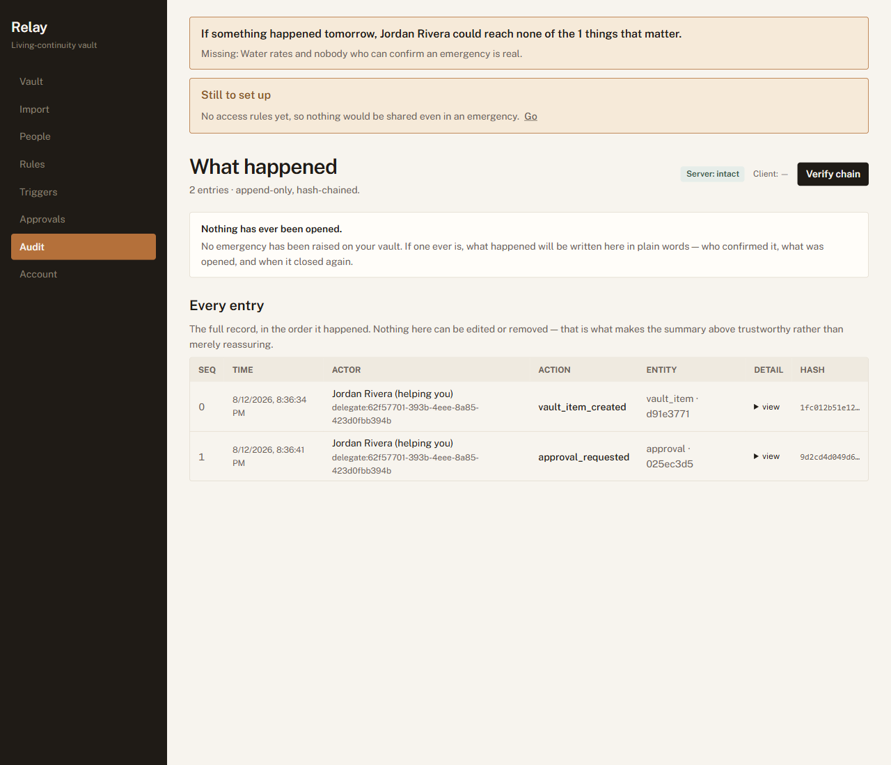
UC-32 — and in the tamper-evident record, named rather than a UUID.
UC-33 — Know how many ways back in you have left
ActorOwner
GoalNot discover you are out of recovery codes at the moment you need one.
ExpectedA count, never a code — they are stored as hashes and readable exactly once, at issue. Coloured by how much room is left, because “1 left” in the same grey as everything else is a fact nobody acts on.
VerifiedPass. Four issued with one spent read “You have 3 left.” A silent cliff until this pass: codes are consumed one per use and are the only way back when the authenticator is gone, and the product said nothing as the sheet ran down.
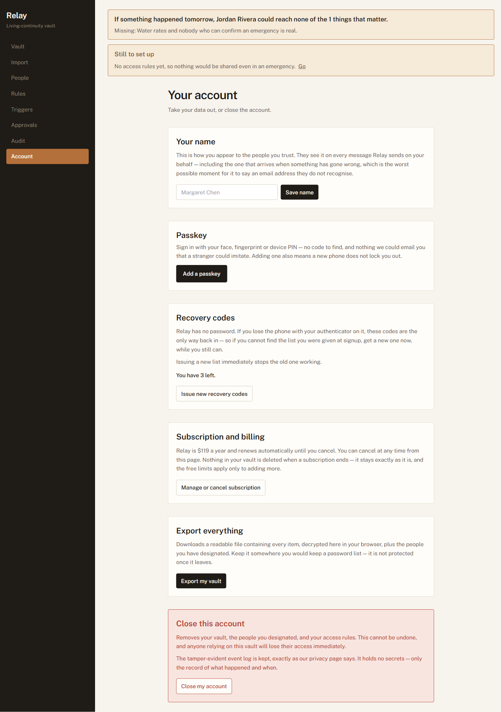
UC-33 — the account screen.
UC-34 — Meet a page that is missing, or one that broke
ActorAnyone — most likely a contact who mistyped an address read to them over the phone
GoalNot be told, in a stack-shaped default page, that something is wrong with them.
ExpectedWritten for the contact, not the owner: one of the two readers may be in a hospital corridor. Leads with the fear — nothing lost, nothing opened — and names the three places somebody was probably trying to reach rather than offering a dashboard they do not have.
VerifiedPass. The 404 serves the product’s voice; Next’s bare default is gone. A failure also reports itself: the digest, the path and the mode reach the operator, and the error message never does — it could carry vault content. Live-proved on production, including that a query string is stripped before it can copy a live ticket into an email.
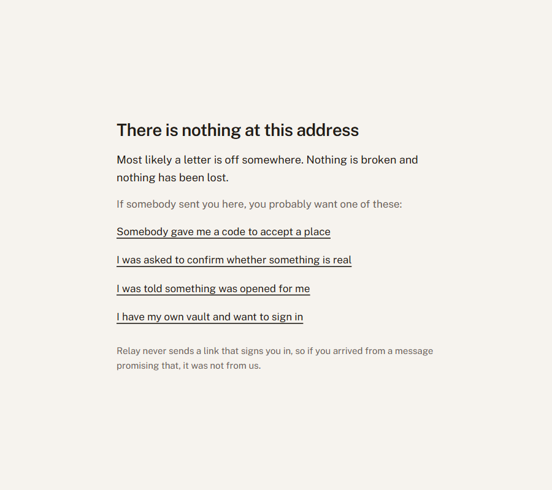
UC-34 — an address that does not exist.
UC-35 — Judge the product without an account
ActorVisitor, deciding whether this is worth signing up for
GoalSee what an owner sees — and what the server sees — before handing anything over.
ExpectedRead-only, no account, no writes. Four stops: the vault ranked by consequence, the complete server-side record for one item, the release state machine, and the hash-chained audit trail. It must show only what a visitor can actually buy.
VerifiedPass. The chain shown in the fourth stop is computed and verified with the production primitives, so its “intact” chip is the real verifier result rather than a decoration. Two recipients under two triggers, so scoped access is shown to differ by person and by condition. No horizontal overflow and no undersized targets at 1280 or 390.
🔴 It was selling something the Terms disclaim, and this is the second time that shipped.
Four of the eight sample items routed to an estate trigger — excluded from
USER_SELECTABLE_TRIGGER_TYPES pending g2-counsel-opinion, while
/terms says in as many words that “Estate and inheritance functionality is not
offered.” The identical contradiction had already been closed once in /rules,
which used to render its dropdown from the unfiltered list; that fix reached the dropdown and
nothing connected it to the tour.
Retargeted to a caregiver arc — an adult child managing a parent’s affairs,
which is the wedge the product is sold on and a trigger a visitor can choose today. The same false
offer appeared twice more on /caregivers and once in the tour’s own prose
(“Estate releases, by contrast, are permanent by design”), which survived the first
pass because grepping the ITEMS never reached the COPY.
Three guards now hold it: every demo item must use a selectable trigger, the prose must
mention no unbuyable trigger, and the tour must keep more than one recipient and more than one
trigger — so a future fix cannot quietly flatten the thing the table exists to demonstrate.
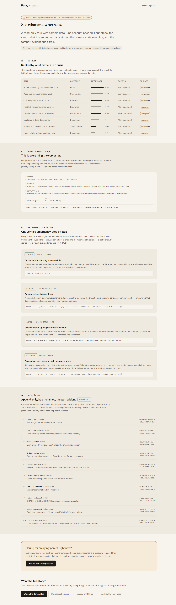
UC-35 — relaystandby.com/demo, after the retarget. Sam (spouse) on emergency, Alex (daughter) on caregiver, and nothing on offer that is not for sale.
Stated coverage limits
What this document does not evidence, said plainly rather than left to be assumed.
Surface
Status
/import
✅ Walked 2026-08-12 — UC-28.
/start
✅ Photographed 2026-08-12 — UC-29.
A helper actually helping
✅ Built and walked 2026-08-12 — UC-24 to UC-27. Was the one journey this document could not evidence.
Policy proposals
✅ Resolved by removal 2026-08-12.policies:propose was granted to every helper, offered by nothing, and could not be applied on approval — an owner could be told a suggestion was granted and have nothing change. Dropped rather than built, because a policy joins an item to a recipient and a helper can see neither: building it honestly would mean showing them the owner's circle. An unappliable approval can now no longer be approved at all, only rejected.
Helper import
import:run is granted and there is no helper-facing import screen. Additive once wanted.
Estate release
Deliberately unreachable — estate is excluded from user-selectable triggers pending g2-counsel-opinion.